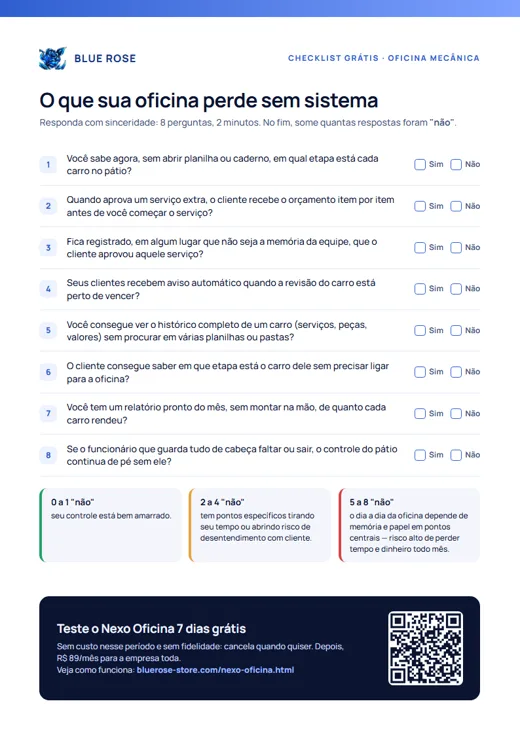
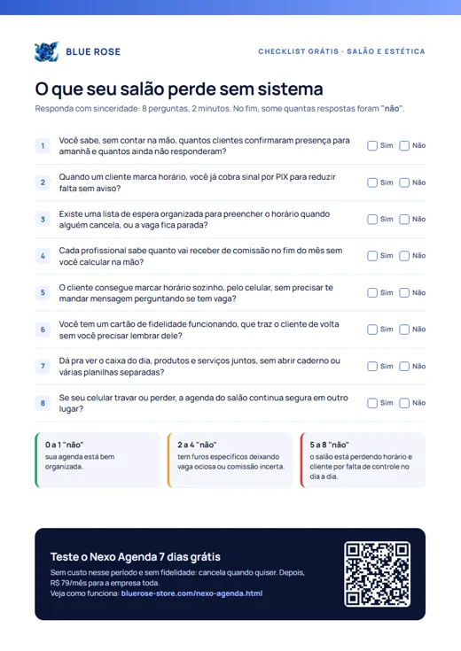
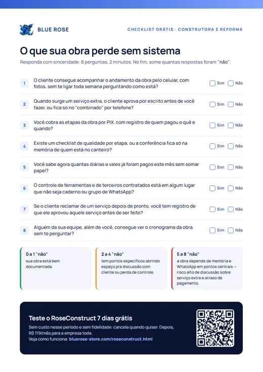
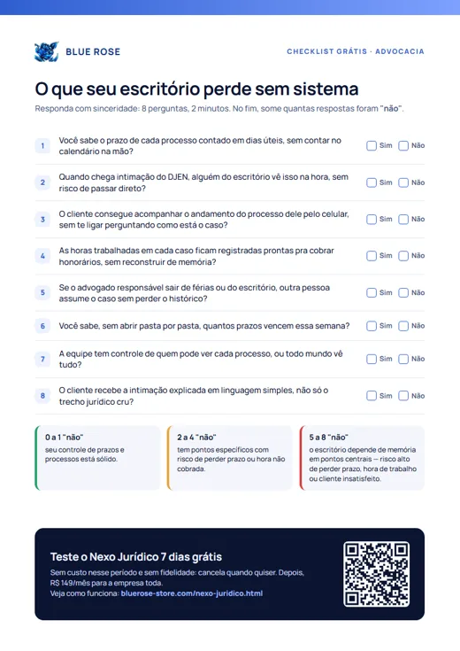

Oficina mecânica
O que sua oficina perde sem sistema
8 perguntas de sim ou não, 2 minutos. Some os "não" e veja onde o dia a dia está escapando.
Escolha o seu ramo, baixe o PDF e responda em 2 minutos. Dá para imprimir e preencher com a equipe. No fim, a pontuação mostra onde o tempo e o dinheiro estão escapando, e você pode testar o sistema do seu ramo 7 dias grátis, sem fidelidade.

8 perguntas de sim ou não, 2 minutos. Some os "não" e veja onde o dia a dia está escapando.

8 perguntas de sim ou não, 2 minutos. Some os "não" e veja onde o dia a dia está escapando.

8 perguntas de sim ou não, 2 minutos. Some os "não" e veja onde o dia a dia está escapando.

8 perguntas de sim ou não, 2 minutos. Some os "não" e veja onde o dia a dia está escapando.
Atendimento de segunda a sexta, das 8h às 18h. Quer ajuda para escolher? Fale com a gente.